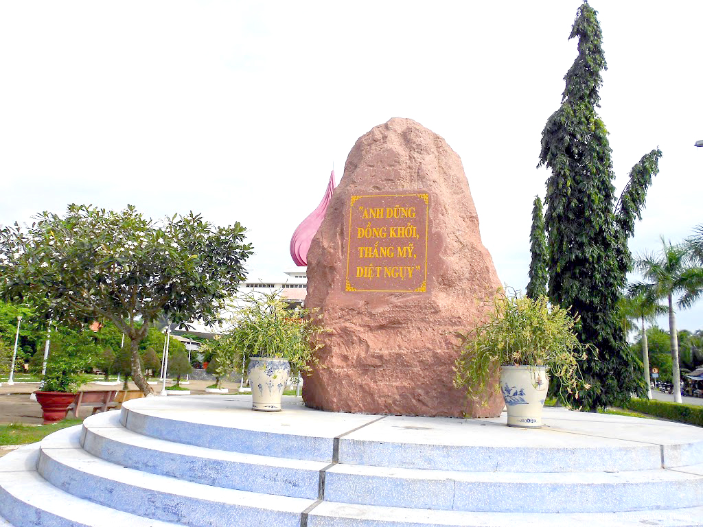
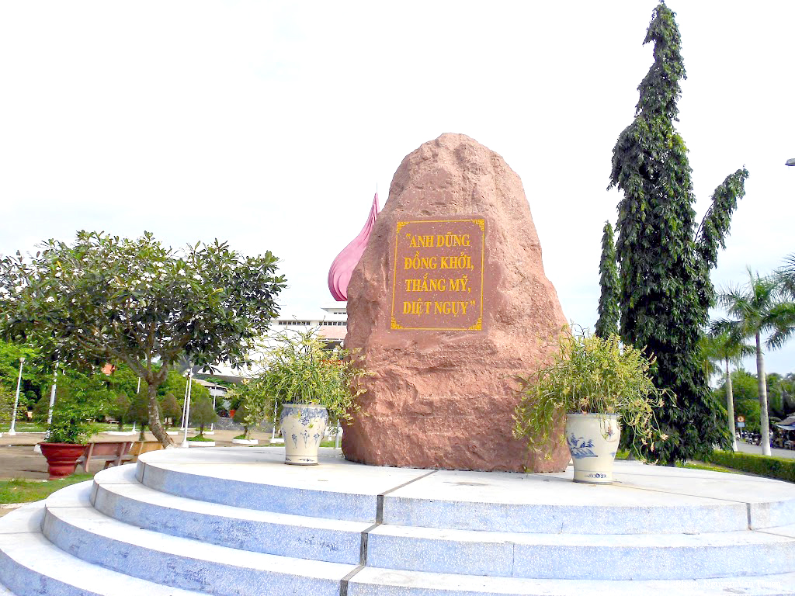

ĐẶC ĐIỂM
Giới thiệu: Bến Tre là một tỉnh thuộc vùng Đồng bằng sông Cửu Long, Việt Nam. Bến Tre có 09 đơn vị hành chính cấp huyện trực thuộc, bao gồm các huyện: Ba Tri, Bình Đại, Châu Thành, Chợ Lách, Giồng Trôm, Mỏ Cày Bắc, Mỏ Cày Nam, Thạnh Phú và thành phố Bến Tre.
Dân số: Năm 2022, dân số Bến Tre ước đạt 1.315.700 người, phần lớn ở nông thôn (85,5%), mật độ dân số 533 người/km2.
Vị trí: Tỉnh Bến Tre nằm ở đồng bằng sông Cửu Long, có hình rẻ quạt, đầu nhọn nằm ở thượng nguồn, với các hệ thống kênh rạch chằng chịt, có tổng diện tích đất tự nhiên hơn 2.380,7 km² phía Đông giáp Biển Đông với chiều dài bờ biển 65 km, phía Tây và phía Nam giáp tỉnh Vĩnh Long và tỉnh Trà Vinh có ranh giới là sông Cổ Chiên, phía Bắc giáp Tiền Giang có ranh giới là sông Tiền.
 
